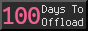

日常#9
霜打菜、跑步、关于博客、Advent of Code 2025
霜打菜
发现小象超市里有一些标记为「霜打菜」的蔬菜，买过菜心和菠菜，吃起来都带有一种明显的甜感，像是米饭嚼了很多次之后的那种甜，还蛮好吃的。
「霜打菜」是秋冬季经过霜冻作用的蔬菜品种 ，低温环境下，蔬菜细胞为抵御冻害启动保护机制，通过淀粉酶将淀粉分解为葡萄糖、果糖等可溶性糖分，降低细胞内溶液冰点。由于包含更多的糖分，吃起来会有比较明显的甜感。
其中菠菜买到的是矮脚菠菜，相比普通菠菜，菜梗更短，叶子更大一些。有一天加在泡面里当配菜，吃起来的感觉就像是裙带菜，又软又甜，相当不错，唯一的缺点就是剥菜根有点累人，太多棵了。
煮一碗汤达人，加点青菜、温泉蛋（可生食蛋滚水煮 6 分钟左右），颇有一种日式拉面的感觉 (≖ᴗ≖๑)
除了青菜，最近买的「褚氏xx丑橙」也蛮好吃的，大多时候都很甜、多汁，一口咬下去 就像是 喝了一口酸甜可口的橙汁，回购了很多次。
虽然从周围环境不太能感受到季节的变化，但从当季的水果、蔬菜感受到了。
跑步
在一个群里，之前聊过一些关于跑步的事情，有人说「今天你跑了吗」然后发了个跑步记录，我最近也在跑，也跟着发了一下，不知怎么的，最近一两周大家就开始在群里打卡跑步了，自然地开始相互督促。
我们跑步心率都在 160 左右，其中一个朋友比较在意心率，羡慕那些跑步心率保持 130 左右的人。心率在 130 左右，大概跑起来都不用喘气吧，确实很爽。不过我不太在乎，只要跑起来身体没有不舒服就好。
总会有人说应该怎么样才是好的，好像达不到某个标准、目标，就是不好的。
让我想到 Zine#46::谈谈不自律的良好生活 by Sylvan_Wang，目标和要求往往会被用来评判自己，当自己目前阶段达不到目标时，往往会带来挫败感，甚至导致放弃行动。
在 278-学外语和锻炼身体为什么是相似的训练？ 里也谈到，「应该如何」，其实是行动后，在错误中总结的。与其在意那么多的「应该」，不如先行动起来，在摸爬滚打中找到适合自己的东西，不用那么在意别人说的「应该」。
行动起来更重要。
The only thing that is doing the thing is doing the thing.
关于博客
在 Zine#46::how did I make the music page by Ege Çelikçi 分享了作者的文章，没想到他竟然看到了，还写了 一条笔记 并给我的 Album Wall 发送了 Webmention，我也很开心！
写博客以来，也收到过一些邮件、其他博客的链接，我自己也会给一些作者发邮件、留言、链接他们的文章，大多数时候交流都是友好的，收到互动时也很让人开心。
这些作者、读者我都谈不上认识，但彼此之间的这些互动，让我有种拉近了和他们的距离的感觉。有的博客我经常看，就像去看一个老朋友；有的人彼此天各一方，本来不会产生什么联系的，但通过博客偶然地产生了联系，也很奇妙。
写博客真的很有趣，如果你还没开始，不妨一试。
如果你链接了我的页面，欢迎给我发送 Webmention 呀！虽然通过 Google Search Console 能看到一些外链，但可能也不全，所以你链接了我，我可能也不知道。如果你愿意给我发一个 Webmention，我就更容易发现你的引用，你的文章的我也会认真看的 :)
发送 Webmention，只需要在对应页面的底部找到 「Webmentions」，然后把你的文章链接贴上去，点击「提交」就可以啦，就这么简单。
对 Webmention 感兴趣的话，可以看看 给博客添加 Webmention。
临近圣诞节，给博客添加了一些装饰，例如飘落的雪花，这些装饰可能会持续到跨年。
前阵子搜集 88x31 buttons，看到了：

这是一个在「一年内写 100 篇文章」的活动，今年或许是我最有可能达成这个成就的一年，还差二十来篇，努力在 2025 年结束前实现。
不知道写点什么，计划是多写几篇关于专辑的分享，也顺便丰富一下 Album Wall。
Advent Of Code 2025
Advent of Code 2025 (AoC) 开始啦，这是每年圣诞节前的一个编程活动，你需要解决一些谜题，帮助小精灵准备好圣诞节。
从 12 月 1 日开始，每天会有两个谜题（以前都是持续 24 天，今年开始好像改成了 12 天），都挺有趣的，不限制你用什么方法，什么语言，总之能得到答案就行。
我打算学习一下 python 和 Jujutsu(jj)，这几天通过解决 AoC 的谜题，熟悉了 python 的一些基本语法和 jj 的基本流程。
对比 JavaScript，python 的语法还是有挺多不一样的地方的， python 似乎比较注重缩进，有的语法比 JS 更方便，有的也让我感到意外。
以前都没有通关过 AoC，有时实在没有思路，又总想着要靠自己解决，有一种要证明自己能行的执拗，不愿意承认水平不足。看到别人写的优美的代码，追求极致的性能，对比之下，也会因为不及别人而感到挫败。
但不会也正常，有的知识自己不知道、不熟练，当下靠自己就是做不出来，学便是了。承认自己水平不足，抱着一种学习的心态，能学到新东西，应该感到开心才是。
子曰：「由，诲女知之乎！知之为知之，不知为不知，是知也。」
这是我的 题解（代码比较粗糙，但能解决问题），如果你也参加了，欢迎交流思路～
在 powRSS 发现了 Yordi Verkroost 分享了他用 python 的解题思路，从中也学到了不少。